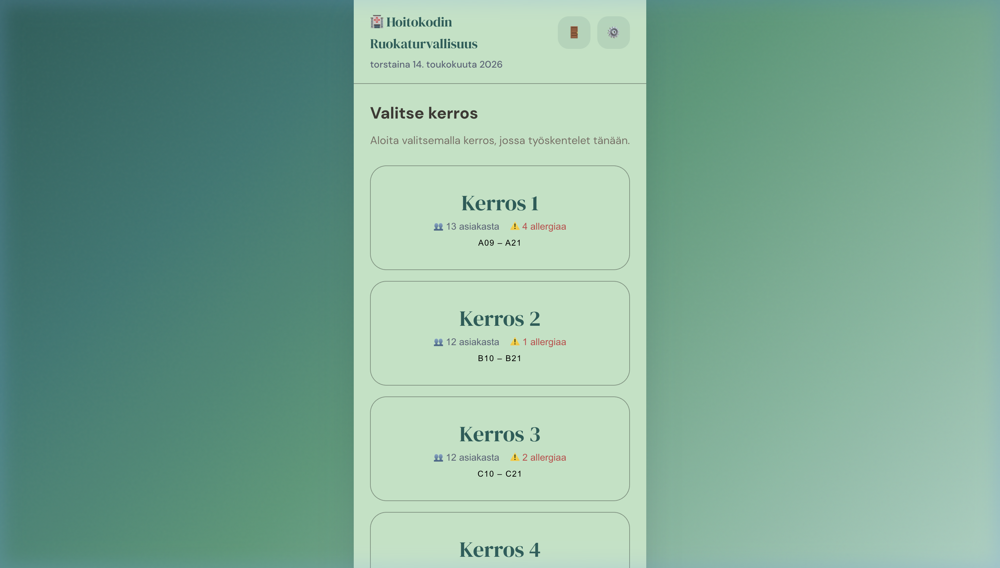
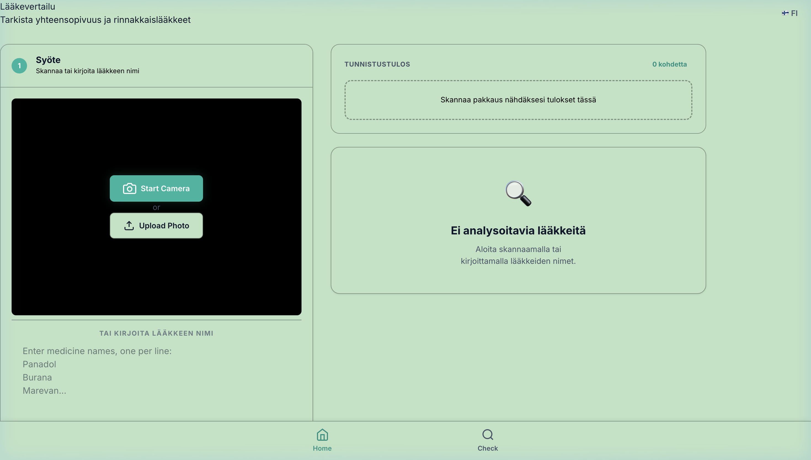

Kliinistä osaamista HUS:sta & teknologiaa hoitotyön tueksi
Kolme harjoittelujaksoa — ortopedia, silmätautien päivystys ja pitkäaikaishoito. Näin ongelmia hoitotyön arjessa ja rakensin niihin teknologiset ratkaisut.
Olen sairaanhoitajaopiskelija Diakonia-ammattikorkeakoulussa. Ennen hoitoalaa valmistuin IT-tradenomiksi Haaga-Heliasta (2019–2024). Tämä yhdistelmä antaa minulle ainutlaatuisen näkökulman: ymmärrän sekä kliinisen työn todellisuuden että teknologian mahdollisuudet.
Olen suorittanut harjoittelut HUS Siltasairaalassa (ortopedia), HUS Tammisairaalassa (silmätautien päivystys) ja Helsingin seniorisäätiössä (pitkäaikaishoito). Minulla on LOVe-lääkelupa ja monipuolinen kliininen kokemus.
Etsin sairaanhoitajaopiskelijan sijaisuuksia erityisesti erikoissairaanhoidossa, päivystyksessä ja ikääntyneiden hoidossa. Olen motivoitunut, potilasturvallisuutta korostava opiskelija, jolla on vahva IT-tausta.
Monipuolista kliinistä kokemusta erikoissairaanhoidosta ja pitkäaikaishoidosta.
Harjoittelu vahvisti kykyäni tehdä järjestelmällistä ensiarviota ja huomioida potilasturvallisuus kiireellisissä tilanteissa.
Opin arvioimaan potilaan vointia kokonaisvaltaisesti leikkauksen jälkeen ja toimimaan osana moniammatillista tiimiä.
Pitkäaikaishoito opetti minulle jatkuvuuden, lääketurvallisuuden ja asukkaan arjen tuntemisen merkityksen.
IT-osaamiseni avulla rakensin työkaluja, jotka ratkaisevat todellisia hoitotyön ongelmia.

Kliininen ongelma → teknologinen ratkaisu
Ongelma: Hopeatien palvelutalossa havaitsin, että asukkaiden ruoka-allergiatiedot
olivat hajallaan — virhe ruoka-aineen kanssa ei ole valitus, vaan hengenvaarallinen tilanne.
Ratkaisu: Rakensin sovelluksen, joka kokoaa allergia- ja ruokatiedot
yhteen paikkaan hoitajien käyttöön ruokailun aikana. Sovelluksen suunnittelussa korostuivat selkeys ja potilasturvallisuuden tukeminen.

Kliininen ongelma → tekoälyratkaisu
Ongelma: Pitkäaikaishoito-osastolla hoitajat tarkistivat Anja-pussien lääkkeet
Apotti-lääkelistaa vastaan manuaalisesti useita kertoja päivässä. Sama vaikuttava aine esiintyi
eri kauppanimillä (Burana → ibuprofeeni), mikä aiheutti toistuvaa epävarmuutta.
Ratkaisu: AI-pohjainen työkalu, joka skannaa lääkepussin, tunnistaa
vaikuttavat aineet ja vertaa ne reseptiin automaattisesti.
Huom: Tämä on opiskelijaprojektina rakennettu prototyyppi. Työkalu ei korvaa hoitajan ammatillista arviointia tai virallisia lääkehoidon prosesseja.
Kiinnostaako yhteistyö tai haluatko kuulla lisää osaamisestani? Ota rohkeasti yhteyttä.